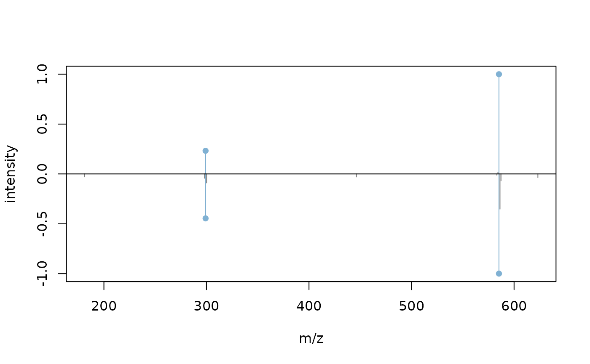

Authors: Josep M. Badia [aut, cre] (https://orcid.org/0000-0002-5704-1124)
Last modified: 2021-09-27 19:37:55
Compiled: Mon Sep 27 19:39:36 2021
*This vignette describe in detail the annotate function. It is advised a previous reading of the MS2ID introduction.
annotate is the MS2ID function that annotates MS/MS query spectra; every query spectrum is compared with a reference library, and compounds with a similar spectrum are listed. This function requires an MS2ID reference library, as described in MS2ID introduction; next code recalls how to obtain it:
library(CompoundDb)
wrkDir <- tempdir()
## Locate the compounds file
MoNAsubset <- system.file("extdata/MoNAsubset.sdf.gz", package = "MS2ID")
cmps <- compound_tbl_sdf(MoNAsubset)## Warning: MoNa data can currently not be normalized and the compound table
## contains thus highly redundant data.
spctr <- msms_spectra_mona(MoNAsubset, collapsed = TRUE)
spctr$predicted <- FALSE
#configure metadata
metad <- data.frame(
name = c("source", "url", "source_version","source_date"),
value = c("MoNA", "https://mona.fiehnlab.ucdavis.edu/downloads",
"v1", '07-09')
)
#obtain compdb object
cmpdbDir <- file.path(wrkDir, "cmpdbDir")
if(dir.exists(cmpdbDir)){
do.call(file.remove, list(list.files(cmpdbDir, full.names = TRUE)))
}else{
dir.create(cmpdbDir)
}
db_file <- createCompDb(cmps, metadata = metad, msms_spectra = spctr,
path = cmpdbDir)
cmpdb <- CompDb(db_file)
library(MS2ID)
MS2IDdirectory <- createMS2ID(name = "MS2ID_annotVign", cmpdb = cmpdb,
overwrite = TRUE, path = wrkDir)The following example shows the basic usage of the function annotate. It takes advantage of tools developed in the Spectra package (Gatto, Rainer, and Gibb 2021) to subset query spectra according to their retention time and MSLevel; please note that direct loading mzML files is also possible.
library(utils, Spectra, MS2ID)
queryFile <- system.file("extdata/Met1.zip", package = "MS2ID")
queryFolder <- file.path(wrkDir, "QRYspectra")
utils::unzip(queryFile, exdir = queryFolder)
querySpectra <- Spectra::Spectra(dir(queryFolder, full.names = TRUE))
querySpectra <- querySpectra %>%
Spectra::filterMsLevel(2) %>%
Spectra::filterRt(c(100, 400))
refLibrary <- MS2ID(MS2IDdirectory)
annotResult <- annotate(QRYdata = querySpectra, MS2ID = refLibrary)The annotate function returns an Annot object.
This object stores the annotation so we can:
MS2IDgui function.export2xlsx function.hits(): Returns a cross-reference data frame containing the annotation hits, the id of the spectra and compounds and:
qrySpectra(): returns an Spectra object (Spectra package) containing both successful query and consensus spectra (and their source spectra) (see consensus spectra).refSpectra(): returns an Spectra object (Spectra package) with the reference spectra present in the hits table.refCompound(): returns a data frame containing metadata of the reference compounds present in the hits table.infoAnnotation(): variables used on the annotate function.In the example below, we use Spectra tools to browse the annotation results, although it is more advisable to use the visual browsing provided by the MS2IDgui function.
#merge hits and compound info
result <- merge(x = hits(annotResult), y = refCompound(annotResult),
by.x = "idREFcomp", by.y = "id", all.y = FALSE)
head(result)## idREFcomp cosine idREFspect idQRYspect propAdduct cmnMasses ID_db
## 1 1 0.9296013 32 1787 M+H 3 MoNA
## 2 1 0.8735071 29 1829 M+H 3 MoNA
## 3 1 0.9279620 29 1787 M+H 2 MoNA
## 4 1 0.9712797 30 1858 M+H 3 MoNA
## 5 1 0.8929630 33 1829 M+H 4 MoNA
## 6 1 0.8742057 35 1829 M+H 3 MoNA
## name formula exactmass inchikey smiles
## 1 Bilirubin C33H36N4O6 584.2635 BPYKTIZUTYGOLE-IFADSCNNSA-N NA
## 2 Bilirubin C33H36N4O6 584.2635 BPYKTIZUTYGOLE-IFADSCNNSA-N NA
## 3 Bilirubin C33H36N4O6 584.2635 BPYKTIZUTYGOLE-IFADSCNNSA-N NA
## 4 Bilirubin C33H36N4O6 584.2635 BPYKTIZUTYGOLE-IFADSCNNSA-N NA
## 5 Bilirubin C33H36N4O6 584.2635 BPYKTIZUTYGOLE-IFADSCNNSA-N NA
## 6 Bilirubin C33H36N4O6 584.2635 BPYKTIZUTYGOLE-IFADSCNNSA-N NA
library(Spectra)
#Subset spectra and metadata considering first hit query spectra
idQRYspect_1 <- result$idQRYspect[1]
result_1 <- dplyr::filter(result, idQRYspect == idQRYspect_1)
qrySpct_1 <- qrySpectra(annotResult)
qrySpct_1 <- qrySpct_1[qrySpct_1$id %in% result_1$idQRYspect]
refSpct_1 <- refSpectra(annotResult)
refSpct_1 <- refSpct_1[refSpct_1$id %in% result_1$idREFspect]
#compare query spectrum with its first hit reference spectrum
refSpct_draw <- refSpct_1[1]
refSpct_draw$intensity <- refSpct_draw$intensity/max(refSpct_draw$intensity)
qrySpct_1$intensity <- qrySpct_1$intensity/max(qrySpct_1$intensity)
plotSpectraMirror(qrySpct_1, refSpct_draw)
As a default, annotate function tries to summarize adjacent MS/MS spectra into consensus spectra: the resulting consensus spectra will be annotated instead of the query spectra that summarizes (along with the query spectra non able to be consensued). This strategy diminishes artifacts and noise and reduce significantly the annotation time.
A group of adjacent query spectra is considered source for a consensus spectrum when all of them have the same precursor mass, collision energy and polarity. Also, every query spectrum must be similar (cosine > consCos argument) to the apex spectrum of the group. The resulting consensus spectrum will be formed by the fragments present in the majority of the source query spectra (ratio determined by the consComm argument).
The final annot object will contain not only the query spectra and the consensus spectra that succeeded in the annotation (i.e. with hits), but also the query spectra used to form the successful consensus spectra. Although it is recommended to use the MS2IDgui feature to elucidate the nature of the query spectra, it is also possible to check it by analyzing some of the variables contained in the annot object.
The algorithm will not annotate the spectra with rol=3.
qrySpct <- qrySpectra(annotResult)
#shor query data concerning consensus formation
head(spectraData(qrySpct, c("id", "spectrumId_CONS", "rtime_CONS", "rol")))## DataFrame with 6 rows and 4 columns
## id spectrumId_CONS rtime_CONS rol
## <integer> <character> <character> <integer>
## 1 1775 scanId=339841, scanI.. 339.83299999998, 341.. 4
## 2 1787 scanId=101609, scanI.. 101.601, 103.3339999.. 4
## 3 1799 scanId=362352, scanI.. 362.34400000002, 364.. 4
## 4 1817 scanId=340041, scanI.. 340.03300000002, 341.. 4
## 5 1829 scanId=100071, scanI.. 100.06300000002, 101.. 4
## 6 1831 scanId=302432, scanI.. 302.424, 304.161, 30.. 4In annotation, subsetting the reference library not only reduces the computing time significantly -by taking advantage of the MS2ID backend and the fragments index: it also prunes the result and cuts off non-sense hits. For example, the cmnFrags = (m, n) argument limits the reference spectra so that reference spectra and query spectra have at least m peaks in common among their top n most intense peaks.
In addition, the cmnPrecMass argument limits the reference spectra to those with the same precursor mass as the query spectrum. On the other hand, cmnNeutralMass limits reference spectra to those with a neutral mass plausible with the query precursor (considering all possible adducts).
annotResult <- annotate(QRYdir = queryDir, MS2ID = refLibrary,
cmnFrags = (3, 5),
cmnPrecMass = TRUE, cmnNeutralMass = TRUE,
cmnPolarity = TRUE, nature = "experimental")Other arguments subset the reference spectra according to their polarization or experimental nature (cmnPolarity and predicted, respectively).
As a default, the annotate function uses cosine similarity as a metric to compare two spectra; its default threshold value to beat to consider the comparison a hit is 0.8.
The function also allows the simultaneous calculation of different metrics. In that case, a spectrum comparison is considered a hit when at least one of the metrics exceeds its threshold value. Note that to beat a threshold value has a different meaning depending on the metric: topsoe and squared_chord metrics return a lower number when the spectra are more similar so, unlike the rest, a hit will occur when the returned value is lower than its threshold.
annotResult <- annotate(QRYdata = querySpectra, MS2ID = refLibrary,
metrics = c("fidelity", "cosine", "topsoe"),
metricsThresh = c(0.6, 0.8, 0.6))
head(MS2ID::hits(annotResult))## fidelity cosine topsoe idREFspect idQRYspect idREFcomp
## 1775.1 0.6182551 0.2691026 0.68745142 170 1775 10
## 1775.2 0.9486782 0.9867201 0.08079319 173 1775 10
## 1775.3 0.9750072 0.9981363 0.03686771 174 1775 10
## 1775.4 0.9849112 0.9994530 0.02179557 175 1775 10
## 1775.5 0.9070347 0.9408979 0.16563675 176 1775 10
## 1775.6 0.7294529 0.5787374 0.48779452 177 1775 10
## propAdduct cmnMasses
## 1775.1 M+H 6
## 1775.2 M+H 4
## 1775.3 M+H 3
## 1775.4 M+H 5
## 1775.5 M+H 5
## 1775.6 M+H 5Moreover, the user can define its own metric by declaring a function as an argument; in the following example, foo function uses cosine+1 as a distance metric.
foo <- function(finalMatrix){
vector1 <- finalMatrix[1,]
vector2 <- finalMatrix[2,]
CosplusOne <- 1+ suppressMessages(
philentropy::distance(rbind(vector1, vector2), method = "cosine")
)
names(CosplusOne) <- "CosplusOne"
return(CosplusOne)
}
annotResult <- annotate(QRYdata = querySpectra, MS2ID = refLibrary,
metrics = c("cosine"), metricsThresh = c(0.8),
metricFUN = foo, metricFUNThresh = 1.8)
head(MS2ID::hits(annotResult))## cosine metricFunc.CosplusOne idREFspect idQRYspect idREFcomp
## 1775.2 0.9867201 1.986720 173 1775 10
## 1775.3 0.9981363 1.998136 174 1775 10
## 1775.4 0.9994530 1.999453 175 1775 10
## 1775.5 0.9408979 1.940898 176 1775 10
## 1775.9 0.9972315 1.997231 180 1775 10
## 1775.10 0.9994336 1.999434 181 1775 10
## propAdduct cmnMasses
## 1775.2 M+H 4
## 1775.3 M+H 3
## 1775.4 M+H 5
## 1775.5 M+H 5
## 1775.9 M+H 2
## 1775.10 M+H 5